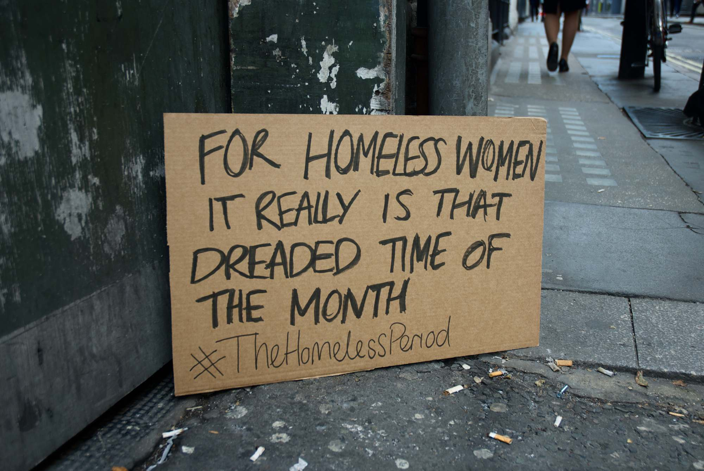
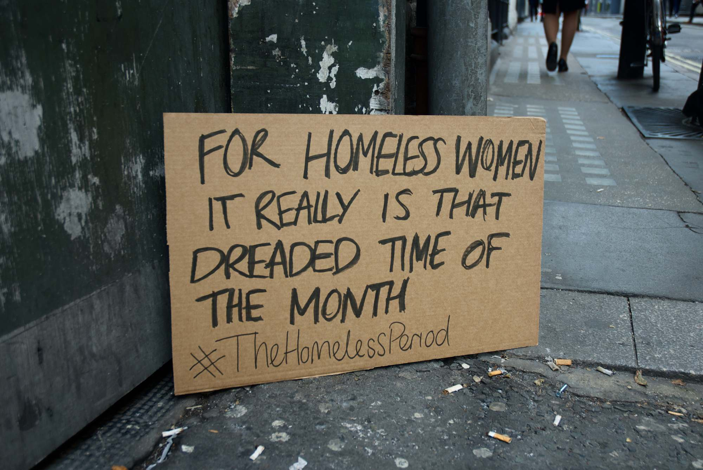

#TheHomelessPeriod
It doesn’t bear thinking about… and that’s the problem
For homeless women, it really is that dreaded time of the month. With limited or no access to sanitary products, they're often forced to go without. This initiative believes that tampons and towels should be made available through homeless shelters, the same way the government provides condoms. To show your support, share the site, sign the petition, or donate a tampon.

Petition
Shelters get an allowance every year to buy items like condoms, but still nothing for sanitary products. Our petition passed its goal of 100,000 and has since been raised in parliament
Donate
Search online for your nearest foodbank or shelter and donate a box of sanitary products.
If you'd like to set up a crowdfund or any other project you can use our name, slogan, logo and any other photos on this site as long as you link back to it. Tweet us your projects and we'll promote them for you (and send us any photos too).
 
